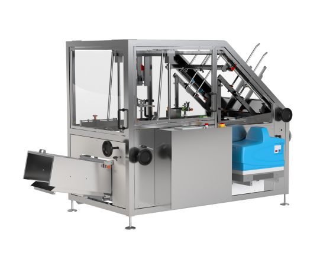
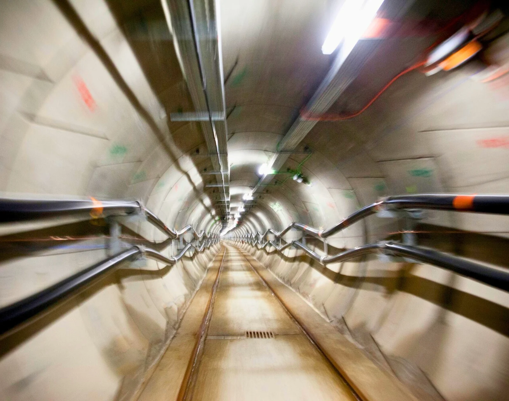

PROJECT 01 · COMPLETEDCardboard Forming Machine Retrofit
Electrical retrofit of a cardboard forming machine during my BTS Electrotechnics. My work focused on the motor drive system.
Learn More →Electronics, Electrical Energy, and Automation
Welcome to my portfolio. I am an engineering student in the FISA 3EA department at ENSEEIHT, Toulouse, with a strong interest in electrical systems, industrial control-command and energy production.

01 · Projects
Discover the technical projects I have completed, contributed to, as well as projects I would like to explore during my engineering studies and apprenticeship.

PROJECT 01 · COMPLETEDElectrical retrofit of a cardboard forming machine during my BTS Electrotechnics. My work focused on the motor drive system.
Learn More →
PROJECT 02Technical experience related to the maintenance of an electricity transmission gallery. Further details will be added as the project develops.
Learn More → PROJECT 03 · UPCOMING
PROJECT 03 · UPCOMING
This section will present a future technical project carried out during my engineering studies or apprenticeship.
Learn More →02 · Career
Each stage has helped me build a stronger foundation in electrical engineering and prepare for more advanced technical responsibilities.
Engineering studies alongside an apprenticeship, with the aim of developing technical skills in electrical engineering, energy systems and automation.
The planned professional environment includes electrical studies, control-command systems and energy installations, particularly in the hydroelectric sector. The exact content of projects will be added as my experience develops.
A demanding year strengthening scientific reasoning, mathematics, physics and engineering methods before entering an engineering programme.
Developed foundations in electrical installations, electrical equipment, system analysis and technical problem-solving.
Built an initial practical foundation in electrical installations, wiring, commissioning principles and electrical safety.
CONTACT DETAILS
For professional opportunities or discussions about electrical engineering, energy and automation, you can find my contact details below.
Engineering student · ENSEEIHT FISA 3EA
Apprenticeship at Actemium Toulouse Energies
03 · Mobility
International mobility is an opportunity to discover different working practices, improve my communication skills and gain perspective on engineering challenges.
I have already had the opportunity to travel to Copenhagen in 2025 and use English in everyday situations. I would like to build on that experience and become more comfortable speaking English.
My engineering mobility placement has not yet been completed. I will update this section with the destination, dates and lessons learned once they are confirmed.
04 · Passions
Outside my studies, I enjoy activities that combine being outdoors, physical effort and discovering new places.
Mountain biking gives me the chance to get outside, work on endurance and technique, and explore different landscapes.
I enjoy hiking for the challenge, the scenery and the opportunity to discover places at a different pace.
Physical preparation helps me build consistency, manage effort and keep working towards a clear goal.
05 · Civic engagement
Being a volunteer firefighter is an important part of my life. It has taught me the value of preparation, teamwork and commitment to others.
I have been a volunteer firefighter in Lavaur since July 2019. This commitment involves training, teamwork and responding to emergency situations according to my training and responsibilities.
I also contribute to the local firefighters’ association, including communication activities and the organisation of community events such as the firefighters’ ball and a charity bingo.
Listening, staying calm under pressure, respecting procedures, communicating clearly and helping a team work towards a shared objective.